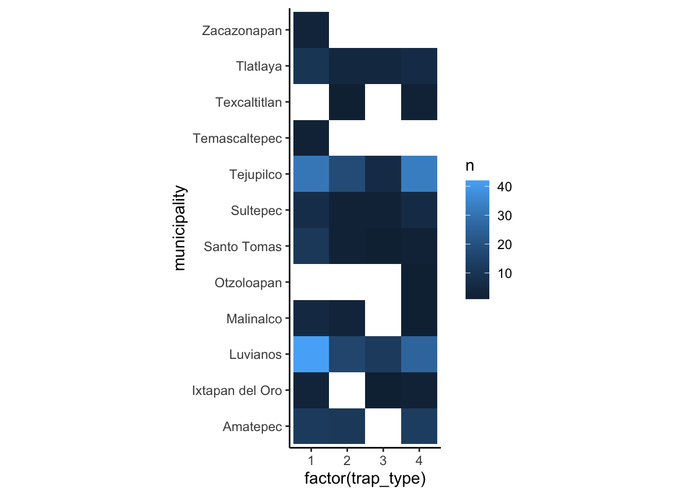
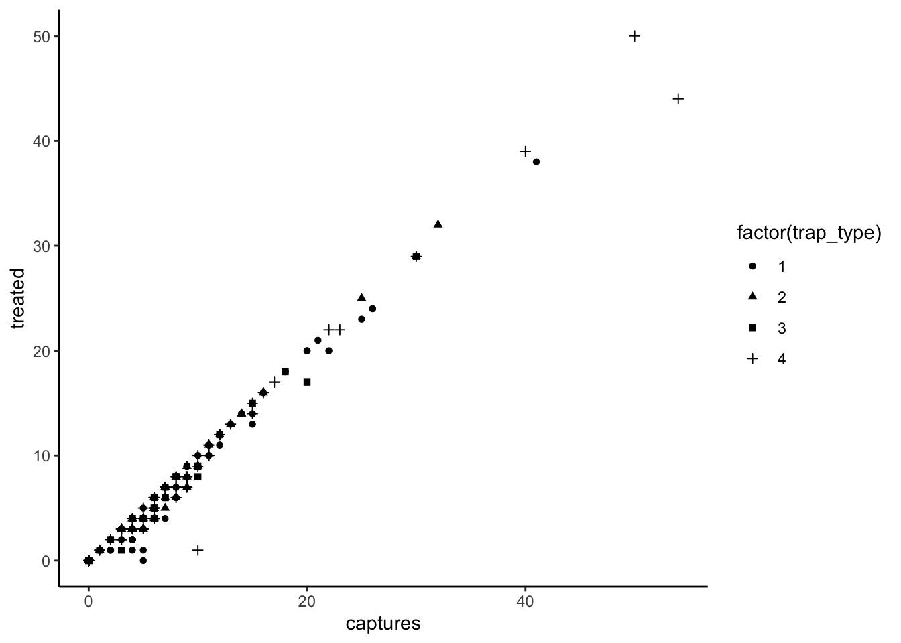
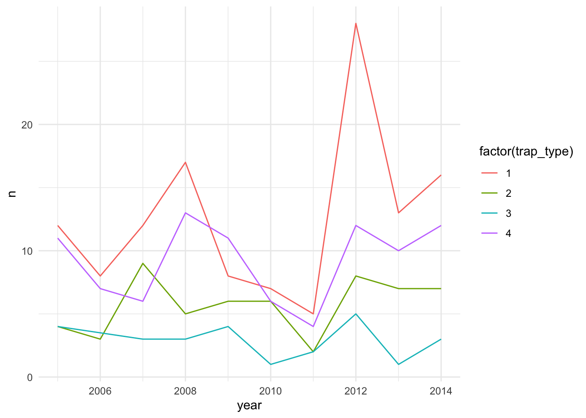
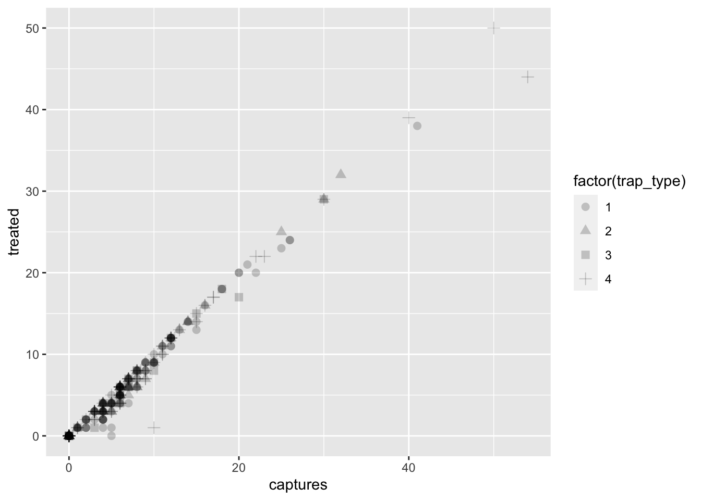
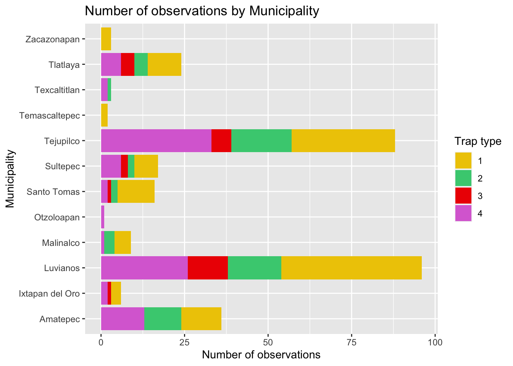
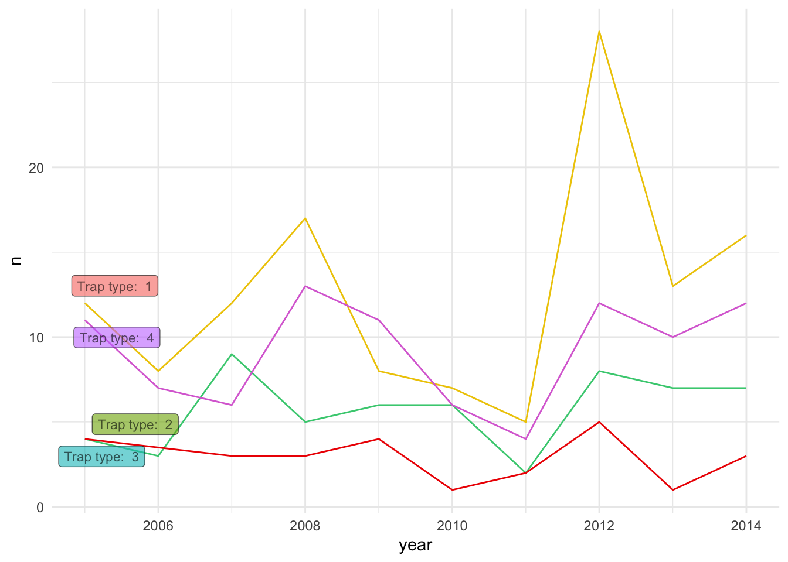
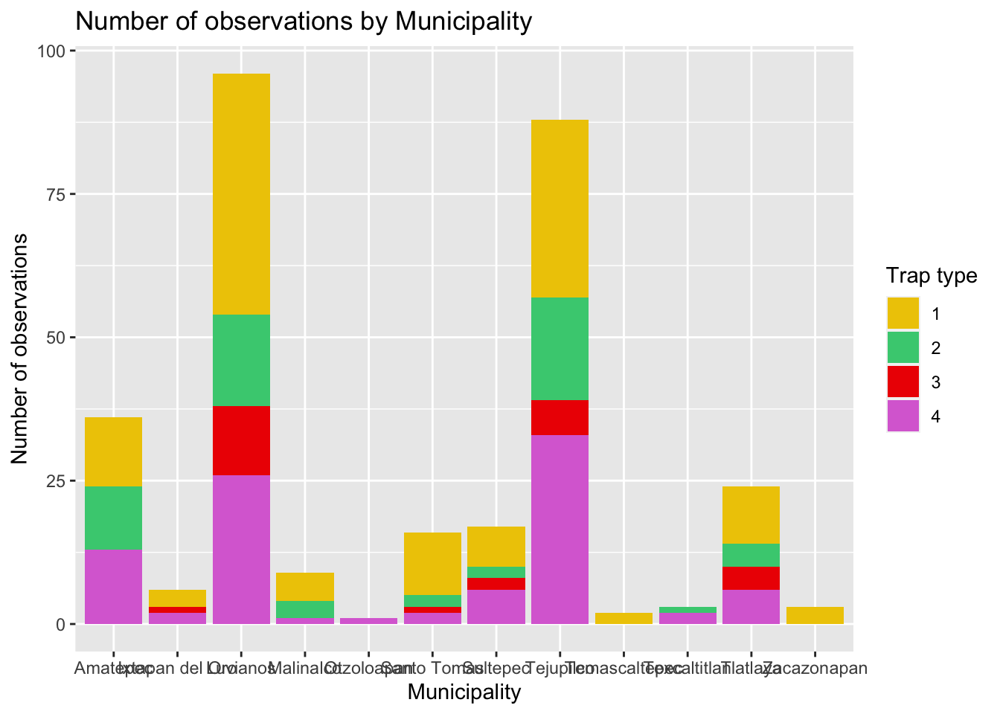
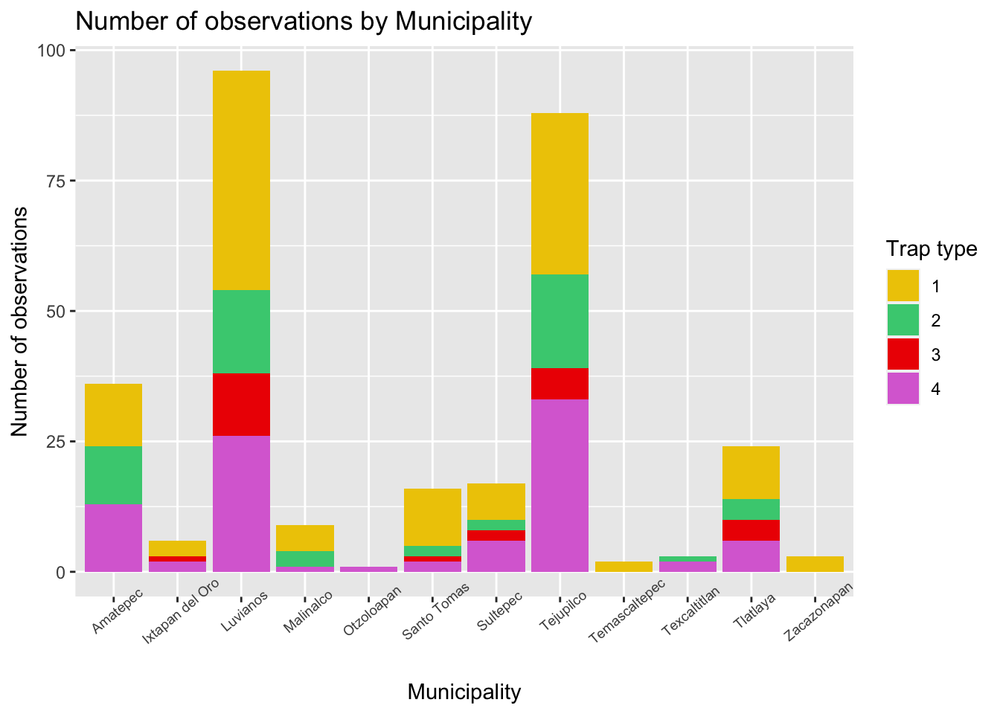
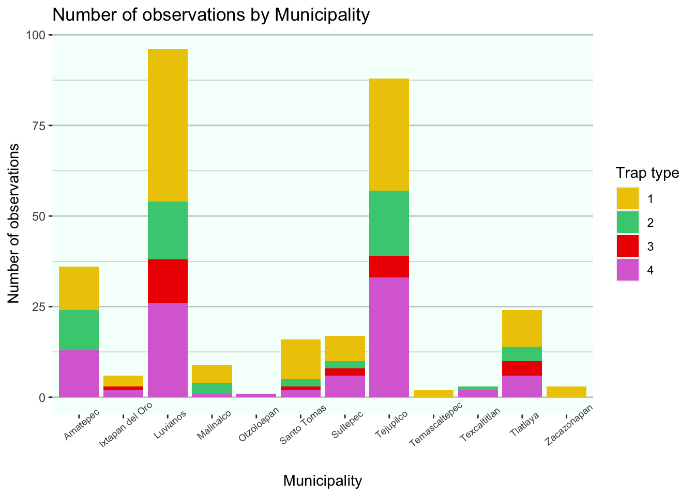

Further customization
Switch
to english  | Mudar para Português
| Mudar para Português 
Este laboratorio continúa con el trabajo realizado anteriormente en la Sección I, asegúrese de tener los objetos generados en la sección anterior.
1 Temas
ggplot incluye la función theme() para definir la
mayoría de los aspectos de la figura como el color de fondo, la
cuadrícula, los ejes, la leyenda, entre muchos otros. También hay varios
temas predefinidos que puedes usar (todos comienzan con
theme_ seguido del nombre del tema), si no quieres meterse
con todos los argumentos de la función theme(). Por
ejemplo:
# Todos los temas predefinidos empiexan con: theme_
figures$heatmap <- figures$heatmap +
theme_classic2() + # Aqui usaremos el tema llamado classic2
coord_equal() # Vamos a fijar las coordenadas iguales
figures$heatmap
2 Otra esteticas
2.1 Forma
Hay otras estéticas que podemos definir como color, tipo de punto, tamaño, entre muchas otras. Intentemos cambiar la forma del punto para una de las gráficas que hicimos anteriormente:
figures$scatter <- captures %>% # Los datos que estamos usando
ggplot() + # we set the canvas
geom_point(aes(
x = captures, # X axis
y = treated, # Y axis
shape = factor(trap_type) # point shape
)) +
theme_classic() # now lets try the theme 'classic'
figures$scatter
2.2 Color
Podemos usar diferentes variables para definir el color de algunos elementos de nuestro grafico. En el siguiente ejemplo usaremos el tipo de trampa (trap_type) para definir el color de la linea.
tCaptures <- captures %>%
mutate(date = as.Date(date, "%d/%m/%y"), # First we will format the date
year = lubridate::floor_date(date, 'year')) %>% # The we create a variable formatting the date as month of the year
count(year, trap_type) # Count the number of observations by month
figures$timeseries <- tCaptures %>%
ggplot() +
geom_line(aes(x = year, y = n, col = factor(trap_type))) +
theme_minimal()
figures$timeseries
3 Personalizacion no-estetica
Hasta ahora solo hemos agregado variables dentro de nuestra función
aes(), pero podemos agregar algunos argumentos fuera de la
función aes() que queremos que se apliquen a TODAS las
observaciones. Por ejemplo, podemos cambiar el tamaño y la transparencia
de los puntos en nuestro diagrama de dispersión, lo que puede ser útil
para ver dónde hay más superposición de observaciones:
figures$scatter <- captures %>% # the data we are using
ggplot() + # we set the canvas
geom_point(
aes(x = captures, y = treated, shape = factor(trap_type)), # aesthetics
size = 2.5,
alpha = 0.2 # alpha will define the transparency of the points
)
figures$scatter
Puede cambiar otros componentes de la figura, como el color, la
forma, el tamaño, etc. Recuerde que todo lo que va dentro de la función
aes() dependerá de las variables de los datos y todo lo que
está fuera son constantes para todas las observaciones
4 Escalas
Como habras notado, por defecto, R elige colores y formas específicas
para las variables que usamos para mapear nuestra figura, las escalas en
ggplot2 son una forma de especificar las formas, colores o
tamaños utilizados para las figuras. Hay una familia de funciones
(scales_*) donde * representa la estética que
queremos definir. En función del tipo de variable para la que quieras
configurar la escala, seleccionarás la función correspondiente.
4.1 Valores continous
Por ejemplo, si queremos cambiar los colores del relleno de una
variable continua, podemos definir los colores de un degradado con la
función scale_fill_gradient().
figures$heatmap <- figures$heatmap + # Lets us our previously defined heatmap
scale_fill_gradient(low = 'black', high = 'red') # we use the function to set the colors
figures$heatmap
4.2 Valores categoricos
Cuando usamos variables categóricas, definimos una paleta de colores específica. Para ello necesitamos saber cuántas categorías tiene nuestra variable. Por ejemplo
# Define a oclor palette
colpal <- c('gold2', 'seagreen3', 'red2', 'orchid')
# Make the figure
figures$bars <- figures$bars +
scale_fill_manual(values = colpal) # We know our variable has 4 categories, so we define 4 colors
figures$bars
4.3 Como encontrar los colores?
R administra los colores de tres maneras diferentes: por nombre
(p. ej. ‘red’), por valor rgb usando la función ‘rgb()’ (p. ej.
rgb(1, 0, 0)), o usando código
hexadecimal (p. ej. “#FF0000”). Puede obtener una lista completa de
los colores con nombre en R usando la función colors(),
pero solo podrá ver los nombres. Por suerte, alguien creó una
herramienta que puede ayudarnos exactamente con los colores que
queremos: el Addin Color Picker. Los addins son herramientas
que están disponibles en Rstudio para facilitar las tareas, probemos el
selector de color (debería estar en la barra de herramientas de
complementos).

Algunos otros recursos para encontrar color y paletas incluyen:
- Coolors
palette generator: Este sitio web genera paletas de colores
aleatorias e incluye otras paletas generadas por el usuario.
- Colour contrast checker: Este sitio web dispone de una herramienta para comprobar el contraste entre dos colores, puede ser útil a la hora de poner etiquetas y otras anotaciones en nuestras figuras.
5 Etiquetas
Por lo general, tratamos de evitar los espacios cuando usamos nombres
para los nombres de las columnas, pero para nuestras etiquetas de
figuras, esta podría no ser la forma más directa de comunicar nuestro
análisis, podemos establecer etiquetas específicas para que nuestros
gráficos sean más legibles y se expliquen por sí mismos. Mejoremos un
poco más la figura del gráfico de barras para que quede más claro,
podemos usar la figura que creamos previamente contenida en nuestra
lista de figuras figures$bars
figures$bars <- figures$bars + # we call the figure previously created
labs(# We will use the function labs to generate our labels
title = 'Number of observations by Municipality', # The title we will give to our figure
x = 'Number of observations', # The label for x axis
y = 'Municipality', # label for y axis
fill = 'Trap type'
)
figures$bars
5.1 In figure labels
De igual manera podemos agregar etiquetas para determinados elementos de nuestra figura. Por ejemplo, vamos a agregar una etiqueta que nos proporcione informacion extra sobre nuestras lineas en la serie de tiempo:
library(ggrepel) # Usamos la paqueteria especifica para esto
lab <- tCaptures %>%
group_by(trap_type) %>%
filter(year == min(year))
figures$timeseries <- figures$timeseries +
geom_label_repel(data = lab, aes(x = year, y = n, label = paste('Trap type: ', trap_type), fill = factor(trap_type)), alpha = 0.6, size = 3) +
scale_color_manual(values = colpal) +
theme(legend.position = 'none')
figures$timeseries
6 Mas alla de los temas predefinidos
Supongamos que queremos voltear el eje de nuestro gráfico de barras
porque creemos que se ajustará mejor a nuestro informe, podemos hacerlo
desde la función aes() al redefinir los ejes, pero en este
caso solo usaré la función coord_flip() para hacer lo
mismo.
figures$bars <- figures$bars + # we call the figure previously created
coord_flip() # We use this function to flip the x and y axis.
figures$bars
Como notará, hay cierta superposición entre el texto de los municipios y apenas podemos leerlos. Podemos modificar la posición de las etiquetas x para arreglar esto, para hacer esto necesitamos modificar el tema.
6.1 Leyendas
La función theme() tiene un montón de argumentos que
puede ver en detalle en la documentación (o usando la funcionalidad de
autocompletar en RStudio/posit.cloud), el argumento que necesitaremos
definir es axis.text.x, el argumento toma un tipo
específico de objeto usado para formatear el texto, para crear este
objeto usamos la función element_text(). Tendrá más sentido
cuando lo probemos:
figures$bars <- figures$bars + # we call the figure previously created
coord_flip() + # We use this function to flip the x and y axis.
theme(axis.text.x = element_text(angle = 40, size = 7))
figures$bars
6.2 Cuadricula
Otro elemento que podemos cambiar en la función theme()
incluye el fondo de la figura, hagamos algunos cambios en la cuadrícula
y el color de fondo.
figures$bars <- figures$bars +
theme(
panel.grid = element_line(color = 'grey80'), # Change the color of the grid
panel.grid.major.x = element_blank(),# Remove the grid for the x axis
panel.background = element_rect(fill = 'mintcream') # Change the background of the figure
)
figures$bars
Si se dio cuenta, al definir los argumentos, utilicé diferentes
funciones para los elementos utilizados (es decir,
element_blank(), element_rect(),
element_line()). Dependiendo del elemento del tema, deberá
definir el elemento apropiado para usar, en resumen:
element_blank()Es para elementos vacios (p.ej. en casi de que quieras removerlos)element_rect()Es para elementos con relleno (p.ej. el panel de fondo o la leyenda)element_line()Para lineas, p.e. las lineas de la cuadriculaelement_text()Para el texto de los elementos, por ejemplo si queremos cambiar el tamaño o color del texto
7 Ejercicio:
Ahora dedique un tiempo a usar los recursos de los que hablamos para modificar la figura y ser creativo con los colores y el tema, tal vez use la escala de colores de su equipo deportivo favorito, el personaje de una película o algo que te guste. ¡Siéntase libre de modificar cualquiera de las figuras que creamos anteriormente!
Este ejercicio ha diso desarrollado con contribuciones de: Jose Pablo
Gomez-Vazquez.
Sientase libre de usar los materiales para entrenamiento y sus propios
fines de investigacion. Al usar este material apreciariamos que nos
referencie con los creditos adecuados. Si esta interesado en agendar una
sesion de entrenamiento, contactar a: jpgo@ucdavis.edu